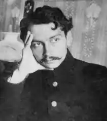
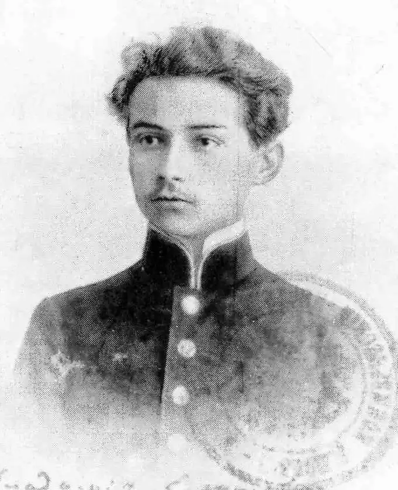
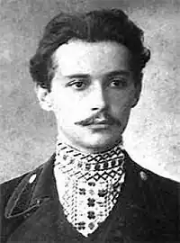

Володимир Євтимович (Юхимович) Свідзинський — один з найвизначніших українських поетів XX століття, майстерний перекладач.
У перших збірках Свідзінський схилявся до символізму, у двох останніх — помітні елементи сюрреалізму у поєднанні з доброю класичною формою. У творчості Свідзінський був далекий від актуальної йому сучасності, що й зумовило негативне ставлення офіційної радянської критики до нього, яка закидала йому перебування "поза часом і простором" і відчуженість його творчості, світовідчування і світогляду від радянської доби.
У перекладацькому доробку Свідзінського — твори двох античних, староукраїнської та дев'яти національних літератур (швейцарська — Г. Келлер; іспанська — де Вега; грузинська — А. Церетелі, К. Чічінідзе; білоруська — Я. Купала; французька — А. Барбюс, В. Гюґо; вірменська — Д. Сасунський; польської — А. Міцкевич, Б. Прус; російської — А. Пушкін, М. Лєрмонтов, Н. Нєкрасов, Ґ. Пєтніков, Л. Топчій, Ґ. Литвак, Н. Ушаков, І. Турґєнєв, М. Салтиков-Щедрін, М. Ґорькій, В. Іванов, В. Вішнєвський; ромської — Вано Хрустальо). 1939 року в його перекладі окремим виданням вийшли три комедії Арістофана. Народився поет 26 вересня (8 жовтня за новим стилем) 1885 року, в селі Маянів Вінницького повіту Подільської губернії, нині Тиврівського району Вінницької області. Батько Євтим Оксентійович — псаломщик, мати Наталка Прохорівна — попівна. Закінчив 1899 року Тиврівське духовне училище. Навчався в Подільській духовній семінарії в Кам'янці-Подільському. Звільнено 25 серпня 1904 року з четвертого класу на прохання батька, переміщеного на той час до Лянцкоруня. 1906 року (як зазначає в анкетах Свідзінський, за іншими документами — 1907 року) вступив вільним слухачем на економічний відділ Київських вищих комерційних курсів, реорганізованих 1908 року в комерційний інститут. 1912 року в журналі "Українська хата" (№ 1) надруковано перший вірш Свідзінського — "Давно, давно тебе я жду…". 26 січня 1913 року закінчив навчання в інституті, але державних іспитів не складав і тому диплома про вищу освіту не здобув. Повернувся до батька в с. Бабчинці (нині Могилів-Подільського району Вінницької області). На запрошення Подільської земської управи обстежив ткацький промисел: від 1 червня до 15 вересня 1913 року об'їхав 16 населених пунктів Могилівського, Гайсинського, Балтського, Проскурівського, Ямпільського, Ольгопільського, Летичівського та Літинського повітів, зібравши відомості про 1607 господарств, що займалися ткацтвом. Нарис Свідзінського "Ткацький промисел" увійшов до книги "Кустарні промисли Подільської губернії" (К., 1916). У березні 1915 переїжджає до Житомира, працює у Волинській контрольній палаті: спочатку за наймом, від 3 червня 1915 канцелярським служителем, а з жовтня тимчасовим виконувачем обов'язків облікового урядовця. Свідзінського мобілізують до армії, наказом від 23 березня 1916 року призначають помічником контролера сьомого класу в управління польового контролю при штабі 7-ої армії, яка 1916 року воювала на терені Галичини (Теребовля, Чортків, Бучач, Галич, Станіслав), 1917 — переважно на території Подільської губернії. З осені 1917 до весни 1918 штаб 7-ої армії перебував у Барі. 14 березня 1918 року Свідзінського, на його клопотання, відчислено з армії "на місце мирної служби у Волинську контрольну палату", але до Житомира Свідзінський не поїхав. Наказом від 10 червня 1918 його звільнено від служби в палаті. Свідзінський переїжджає у Кам'янець-Подільський, з жовтня 1918 працює на посаді "редактора української мови" у видавничому відділі Подільської народної управи. Був вільним слухачем (упродовж п'яти семестрів) історико-філологічного факультету Кам'янець-Подільського державного українського університету. З встановленням у листопаді 1920 у Кам'янці-Подільському Радянської влади працює редактором у видавничому відділі народної освіти повітвиконкому. У Кам'янці-Подільському Свідзінський друкує у часописі "Освіта" (Кам'янець-Подільський, 1919, № 3) статтю "Народні українські пісні про останню світову війну", у літературно-науковому додатку до газети "Наш шлях" (1920, число 7) — поему "Сон-озеро", у літературно-науковому журналі "Нова думка" (орган студентства Кам'янець-Подільського університету; 1920, № 3; редактор журналу Валер'ян Поліщук) вірші "Знову в душі моїй…" і "Пісенька" ("Ой, ліщино густолиста…"). Видавниче товариство "Дністер" в 1920 році видає перекладений Свідзінським культурно-історичний нарис І. Іванова "Халдеї". У Кам'янці-Подільському Свідзінський одружився з народною вчителькою Зінаїдою Йосипівною Сулковською (померла 12 липня 1933). 1921 у них народилася донька Мирослава. Від січня 1921 Свідзінський працює архіваріусом у Кам'янець-Подільському університеті (невдовзі — інститут народної освіти). У листопаді 1921 стає завідувачем архівів повітового комітету охорони пам'яток старовини, мистецтва та природи. 1922 року в Кам'янець-Подільській філії (утворено в травні 1921) Державного видавництва України виходить перша збірка Свідзінського "Ліричні поезії". Рецензії на збірку надрукували Іван Дніпровський у газеті "Червона правда" (Кам'янець-Подільський, 1922. — № 74; від травня 1921 газету редагував Іван Кулик), Валер'ян Поліщук у журналі "Червоний шлях" (Харків, 1923. — № 2). 25 грудня 1922 рік — Свідзінського призначають архіваріусом, 10 січня 1923 р. — секретарем новоствореного архівного управління, а від липня 1923 р. він виконує обов'язки завідувача. 1922 р. науково-дослідна кафедра історії та економіки Поділля при ІНО залучає Свідзінського до виявлення в архівах і музеях Кам'янця-Подільського графічного матеріалу подільських уніатських метрик, рукописних книг і стародруків. Свідзінський зареєстрував 337 метрик, із них 150 мали високохудожні заставки, літери, орнаменти, малюнки. Кілька випусків видання "Метрики XVIII в." літографовано в майстерні Кам'янець-Подільського художньо-промислового технікуму імені Сковороди під керівництвом Володимира Гагенмейстера. З початку 1923 до липня 1925 Свідзінський — аспірант кафедри (підсекція соціальної історії), працює над темами "Селяни приватновласницьких маєтків Поділля в першій половині ХІХ століття", "Аграрні рухи на Поділлі в ХХ столітті", пише розвідку "Економічна еволюція господарства селян тарнорудського маєтку", готує доповідь "Боротьба подільських селян із польськими легіонерами в 1918 році" (виголосив у жовтні 1925 на засіданні Кам'янець-Подільського наукового при УАН товариства), бере участь у комплексному (соціально-економічному, географічному, лінгвістичному, мистецтвознавчому) обстеженні села Панівці. 1925 рік — Свідзінський виступає з доповіддю "Події на селах подільських у 1917—1918 роках" на науковому зібранні Кам'янець-Подільського наукового при Українській академії наук товариства (був його членом — сьомим за порядком вступу). У зв'язку з реорганізацією Кам'янець-Подільського окружного архівного управління 29 серпня 1925 Свідзінський здає справи новопризначеному завідувачеві Дмитру Прядію, деякий час (формально — до листопада 1925) працює там інспектором. У жовтні 1925 Свідзінський переїздить до Харкова, де працює літературним редактором у місячнику "Червоний шлях", від листопада 1930 — в газеті політуправління Українського військового округу "Червона армія". У січні — вересні 1932 р. працює в Техвидаві, потім знову повертається до редакції "Червоного шляху" (від 1936 — "Літературний журнал"). У Харкові сім'я Свідзінського розпалася: дружина з дочкою переїхала до сестри у Вінницю. Тут Свідзінський видав другу поетичну збірку "Вересень" (1927). Остання прижиттєва збірка "Поезії" вийшла 1940 у Києві у видавництві "Радянський письменник" (друкувалася у Львові). Готував наступну збірку "Медобір". Свідзінський також багато перекладав з літератур народів СРСР, з французької, іспанської, польської мов. Серед перекладів "Слово о полку Ігоревім" (1938), комедії Арістофана "Хмари", "Оси", "Жаби" (видано 1939). Був безпартійним. Член Спілки письменників СРСР з 1936 року. 27 вересня 1941 Свідзінського заарештовано. Спалено разом з іншими в'язнями в покинутій господарській будівлі у селі Непокритому під Салтовом.